From Offline to the Operating Room: real-time recognition on wearable and surgical kinematics
One real-time framework for two problems: causal sequence models that must answer within a fixed time budget as data streams in. Offline accuracy is compared with what a live system can achieve, with latency, calibration, abstention and sensor-fault robustness measured on real data.
Headline: freezing-of-gait detection with uncertainty
Online (deployable) setting, 8 test subjects x 3 seeds. Point estimate = pooled over test subjects within a seed, mean over seeds. [95% CI] = percentile bootstrap over test subjects (2000 resamples of the 8 patients; the patient is the unit of independence). PR-AUC = mean over subjects of the per-subject value (mean over seeds). *Strict* F1 uses one-to-one event matching (event_counts(strict=True)), a sensitivity check of the event definition. Every threshold and debounce was chosen on validation subjects only.
Model selection. Among the causal TCN variants, the one with the highest mean validation PR-AUC (validation patients only) is selected: TCN-spectral, tuned (mean validation PR-AUC: TCN-causal 0.462, TCN-causal, deeper + noise aug. 0.486, TCN-spectral + noise aug. 0.589, TCN-spectral 0.615, TCN-spectral, tuned 0.629). Test results played no part in this choice; the other variants are shown as ablations.
| Detector | Operating point | Event F1 [95% CI] | Strict event F1 | Recall | Precision | False alarms / min | PR-AUC [95% CI] | Debounce (median) |
|---|---|---|---|---|---|---|---|---|
| Freeze Index | threshold | 52.1 [40.7, 58.2] | 40.3 [30.5, 46.4] | 57.8 | 47.5 | 0.68 | 0.414 [0.290, 0.528] | 0.00 s |
| Freeze Index | threshold+debounce | 55.0 [44.8, 60.2] | 42.0 [33.3, 48.5] | 59.6 | 51.0 | 0.59 | 0.427 [0.309, 0.535] | 0.38 s |
| TCN-causal | threshold | 48.1 [34.0, 59.3] | 36.2 [23.5, 48.6] | 65.5 | 38.3 | 1.11 | 0.528 [0.429, 0.631] | 0.00 s |
| TCN-causal | threshold+debounce | 45.1 [32.7, 56.6] | 33.7 [22.9, 45.2] | 64.8 | 35.4 | 1.11 | 0.528 [0.429, 0.631] | 0.00 s |
| TCN-acausal | threshold | 47.5 [34.1, 57.0] | 35.9 [24.6, 46.5] | 61.0 | 39.9 | 1.00 | 0.520 [0.409, 0.638] | 0.00 s |
| TCN-acausal | threshold+debounce | 47.0 [33.9, 56.8] | 35.2 [23.9, 46.2] | 58.6 | 39.9 | 0.97 | 0.520 [0.409, 0.638] | 0.25 s |
| LSTM | threshold | 26.7 [16.7, 39.5] | 18.5 [11.6, 28.4] | 57.0 | 17.6 | 1.63 | 0.376 [0.273, 0.479] | 0.00 s |
| LSTM | threshold+debounce | 25.4 [15.2, 39.2] | 16.4 [10.4, 25.7] | 58.4 | 16.4 | 1.75 | 0.376 [0.273, 0.479] | 0.25 s |
| BiLSTM | threshold | 35.7 [21.3, 49.0] | 24.6 [14.0, 36.8] | 61.6 | 25.2 | 1.60 | 0.363 [0.253, 0.486] | 0.00 s |
| BiLSTM | threshold+debounce | 31.3 [19.0, 44.4] | 20.9 [13.2, 30.0] | 56.7 | 22.5 | 1.71 | 0.363 [0.253, 0.486] | 1.00 s |
| TCN-causal, deeper + noise aug. | threshold | 47.8 [32.4, 61.0] | 35.1 [23.2, 46.6] | 63.0 | 38.7 | 0.85 | 0.496 [0.372, 0.617] | 0.00 s |
| TCN-causal, deeper + noise aug. | threshold+debounce | 45.9 [32.7, 58.6] | 34.1 [24.0, 46.0] | 57.5 | 38.3 | 0.76 | 0.496 [0.372, 0.617] | 0.00 s |
| TCN-spectral + noise aug. | threshold | 52.0 [35.9, 64.3] | 36.4 [22.7, 50.3] | 71.0 | 41.0 | 0.83 | 0.598 [0.501, 0.702] | 0.00 s |
| TCN-spectral + noise aug. | threshold+debounce | 52.8 [38.2, 63.9] | 37.7 [25.0, 49.9] | 69.8 | 42.6 | 0.77 | 0.598 [0.501, 0.702] | 0.25 s |
| TCN-spectral | threshold | 58.5 [43.7, 68.1] | 40.8 [28.0, 53.3] | 70.7 | 50.1 | 0.63 | 0.641 [0.549, 0.735] | 0.00 s |
| TCN-spectral | threshold+debounce | 53.8 [40.5, 63.9] | 36.6 [25.8, 47.4] | 66.9 | 45.0 | 0.69 | 0.641 [0.549, 0.735] | 0.00 s |
| TCN-spectral, tuned | threshold | 61.2 [48.5, 68.4] | 42.0 [30.5, 51.5] | 72.3 | 53.1 | 0.61 | 0.599 [0.489, 0.705] | 0.00 s |
| TCN-spectral, tuned | threshold+debounce | 55.4 [41.7, 64.9] | 39.3 [28.8, 49.3] | 67.4 | 47.4 | 0.72 | 0.599 [0.489, 0.705] | 0.25 s |
Paired comparison with the Freeze Index (same operating-point rule)
Difference in event F1 (points). CI = paired bootstrap over test subjects; P(>0) = fraction of bootstrap resamples in which the learned model is better; Wilcoxon = exact two-sided signed-rank test on per-subject F1 (smallest attainable p with 8 subjects is 0.008); wins = subjects where the learned model has the higher F1. Delta PR-AUC = mean over subjects of the per-subject difference (the Freeze Index scored on its power-gated FI, the signal its detector uses).
| Detector | Operating point | Delta F1 [95% CI] | P(>0) | Wilcoxon p | Wins | Delta strict F1 [95% CI] | Delta PR-AUC [95% CI] | PR-AUC Wilcoxon p | PR-AUC wins |
|---|---|---|---|---|---|---|---|---|---|
| TCN-causal | threshold | -4.0 [-10.2, +3.1] | 0.18 | 0.945 | 4/8 | -4.1 [-11.4, +5.1] | +0.114 [+0.029, +0.193] | 0.055 | 6/8 |
| TCN-causal | threshold+debounce | -9.9 [-16.2, -0.9] | 0.02 | 0.250 | 3/8 | -8.3 [-15.2, +1.2] | +0.100 [+0.025, +0.166] | 0.055 | 6/8 |
| TCN-acausal | threshold | -4.6 [-9.3, +1.7] | 0.07 | 0.461 | 3/8 | -4.4 [-11.0, +4.4] | +0.106 [+0.029, +0.184] | 0.078 | 6/8 |
| TCN-acausal | threshold+debounce | -7.9 [-14.4, -0.2] | 0.02 | 0.148 | 3/8 | -6.8 [-14.1, +2.7] | +0.093 [+0.026, +0.161] | 0.078 | 6/8 |
| LSTM | threshold | -25.4 [-30.6, -14.5] | 0.00 | 0.016 | 1/8 | -21.8 [-25.4, -14.2] | -0.038 [-0.139, +0.060] | 0.641 | 3/8 |
| LSTM | threshold+debounce | -29.5 [-34.4, -18.6] | 0.00 | 0.016 | 1/8 | -25.6 [-29.5, -18.9] | -0.051 [-0.150, +0.047] | 0.547 | 3/8 |
| BiLSTM | threshold | -16.4 [-24.3, -5.7] | 0.00 | 0.078 | 2/8 | -15.7 [-22.5, -6.0] | -0.051 [-0.127, +0.019] | 0.641 | 4/8 |
| BiLSTM | threshold+debounce | -23.7 [-33.0, -11.2] | 0.00 | 0.039 | 2/8 | -21.1 [-28.8, -12.2] | -0.065 [-0.137, +0.003] | 0.312 | 4/8 |
| TCN-causal, deeper + noise aug. | threshold | -4.3 [-14.1, +8.0] | 0.23 | 0.383 | 4/8 | -5.2 [-14.2, +7.0] | +0.082 [+0.012, +0.158] | 0.109 | 5/8 |
| TCN-causal, deeper + noise aug. | threshold+debounce | -9.1 [-19.5, +3.2] | 0.07 | 0.312 | 3/8 | -7.9 [-17.6, +4.2] | +0.069 [+0.009, +0.127] | 0.109 | 5/8 |
| TCN-spectral + noise aug. | threshold | -0.2 [-10.1, +9.3] | 0.53 | 0.742 | 4/8 | -3.8 [-11.3, +5.9] | +0.184 [+0.110, +0.262] | 0.008 | 8/8 |
| TCN-spectral + noise aug. | threshold+debounce | -2.2 [-10.4, +5.7] | 0.33 | 0.547 | 6/8 | -4.3 [-11.1, +4.6] | +0.170 [+0.106, +0.241] | 0.008 | 8/8 |
| TCN-spectral | threshold | +6.3 [-3.0, +14.7] | 0.92 | 0.148 | 7/8 | +0.6 [-6.6, +9.2] | +0.227 [+0.141, +0.314] | 0.008 | 8/8 |
| TCN-spectral | threshold+debounce | -1.1 [-8.1, +6.4] | 0.37 | 0.945 | 5/8 | -5.4 [-10.8, +2.4] | +0.214 [+0.137, +0.293] | 0.008 | 8/8 |
| TCN-spectral, tuned | threshold | +9.1 [+2.8, +14.5] | 1.00 | 0.148 | 7/8 | +1.7 [-3.6, +7.1] | +0.185 [+0.108, +0.270] | 0.008 | 8/8 |
| TCN-spectral, tuned | threshold+debounce | +0.4 [-6.9, +7.6] | 0.57 | 0.461 | 5/8 | -2.7 [-8.2, +4.8] | +0.171 [+0.107, +0.242] | 0.008 | 8/8 |
Read with care: 8 patients from one lab study. These are descriptive statistics, not a confirmatory test, and nothing here is a clinical claim.
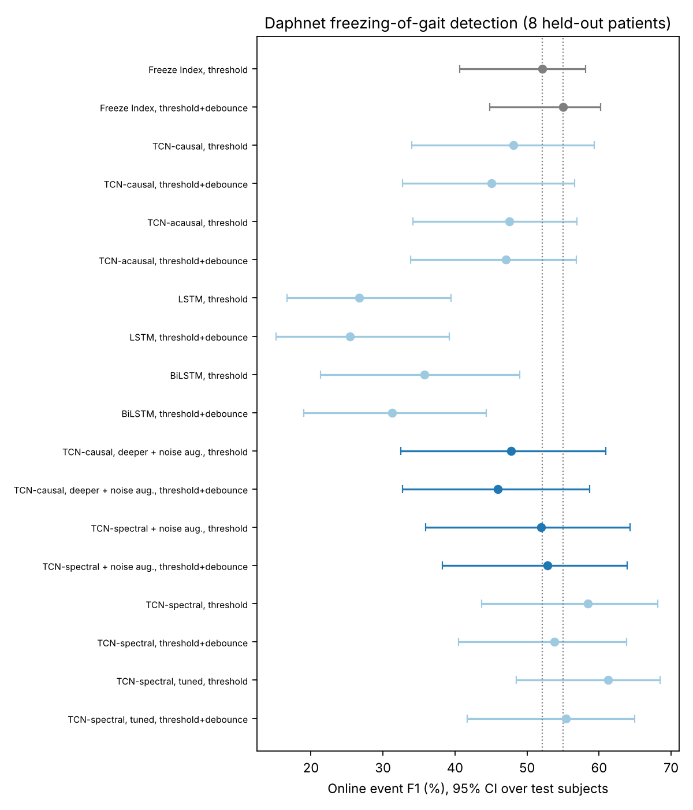
Analysis figures
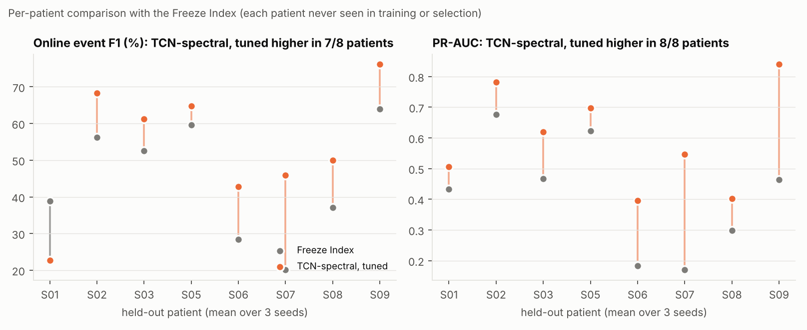
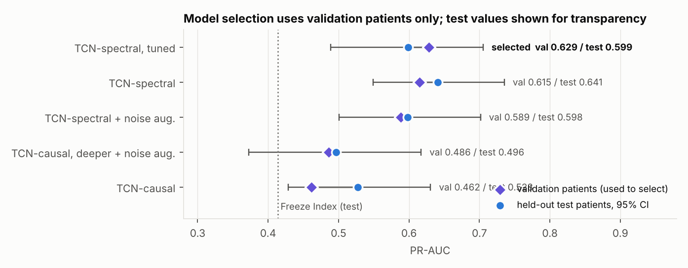
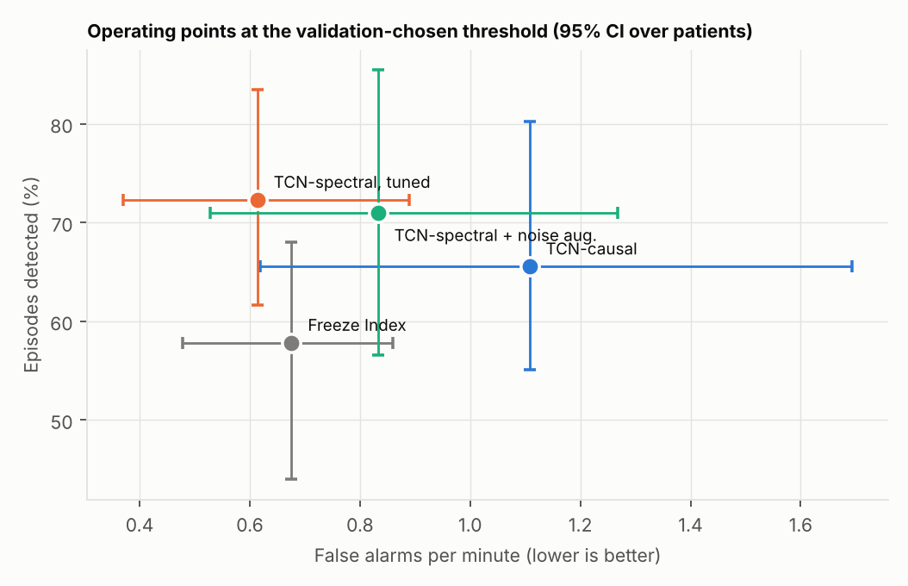
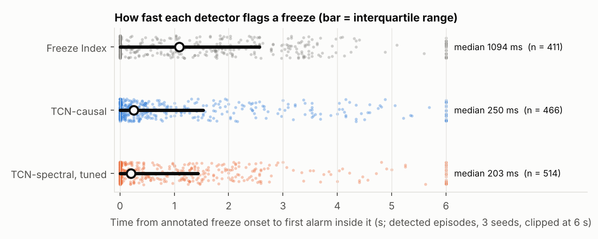
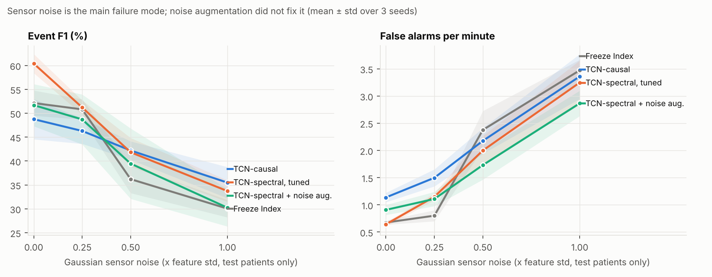
Validation-only hyperparameter search
16 configurations x 8 leave-one-subject-out folds (seed 0). Each configuration is scored on the validation patients of each fold only; the test patients were never used. Ranked by mean validation PR-AUC (the selection criterion); validation event F1 is shown for reference. Both are optimistic (epoch and threshold are also chosen on the validation patients) and are not performance estimates.
Selected: spectral_h64_L10_lr0.002_do0.3_w256 (mean validation PR-AUC 0.647). It is then evaluated on the test patients with 3 seeds (configs/daphnet_tuned.yaml).
| Rank | Features | Hidden | Layers | Receptive field (s) | LR | Dropout | Window (s) | Params | Val PR-AUC | Val event F1 | CPU min |
|---|---|---|---|---|---|---|---|---|---|---|---|
| 1 | spectral | 64 | 10 | 64.0 | 0.002 | 0.3 | 8 | 171,461 | 0.647 | 66.0 | 57 |
| 2 | spectral | 32 | 8 | 16.0 | 0.002 | 0.3 | 4 | 35,429 | 0.640 | 68.3 | 16 |
| 3 | spectral | 32 | 8 | 16.0 | 0.002 | 0.3 | 16 | 35,429 | 0.639 | 65.8 | 13 |
| 4 | spectral | 32 | 8 | 16.0 | 0.001 | 0.3 | 8 | 35,429 | 0.639 | 67.4 | 14 |
| 5 | spectral | 32 | 8 | 16.0 | 0.002 | 0.1 | 8 | 35,429 | 0.638 | 66.0 | 13 |
| 6 | spectral | 32 | 10 | 64.0 | 0.002 | 0.3 | 8 | 43,749 | 0.638 | 66.6 | 28 |
| 7 | spectral | 32 | 6 | 4.0 | 0.002 | 0.3 | 8 | 27,109 | 0.638 | 68.1 | 10 |
| 8 | spectral | 64 | 6 | 4.0 | 0.002 | 0.3 | 8 | 105,413 | 0.637 | 66.6 | 37 |
| 9 | spectral | 32 | 8 | 16.0 | 0.002 | 0.3 | 8 | 35,429 | 0.635 | 66.6 | 14 |
| 10 | spectral | 32 | 8 | 16.0 | 0.002 | 0.5 | 8 | 35,429 | 0.633 | 67.1 | 15 |
| 11 | spectral | 64 | 8 | 16.0 | 0.002 | 0.3 | 8 | 138,437 | 0.631 | 65.6 | 45 |
| 12 | spectral | 16 | 10 | 64.0 | 0.002 | 0.3 | 8 | 11,381 | 0.630 | 61.6 | 9 |
| 13 | spectral | 32 | 8 | 16.0 | 0.005 | 0.3 | 8 | 35,429 | 0.629 | 66.2 | 14 |
| 14 | spectral | 16 | 8 | 16.0 | 0.002 | 0.3 | 8 | 9,269 | 0.619 | 63.2 | 7 |
| 15 | spectral | 16 | 6 | 4.0 | 0.002 | 0.3 | 8 | 7,157 | 0.617 | 63.7 | 5 |
| 16 | raw | 32 | 8 | 16.0 | 0.002 | 0.3 | 8 | 34,821 | 0.460 | 57.7 | 14 |
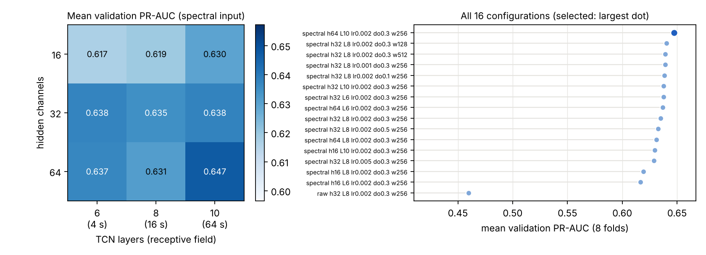
Real-data streaming demo
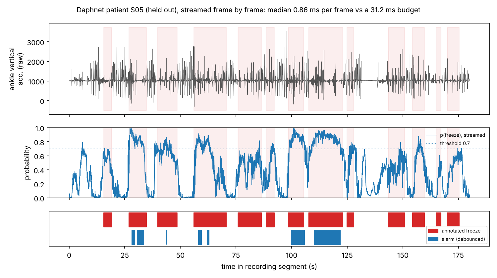
Detector session summary: S05
Overview
Session of 34.8 min from subject S05, analysed by TCN-spectral, tuned at 32.0 Hz (decision threshold 0.7, debounce 1.0 s).
Detected events
The detector raised 37 alarms (1.06 per minute), covering 87.4 s (4.2 % of the session). The longest lasted 11.8 s and the median 1.3 s. First alarm onsets (mm:ss): 02:30, 03:50, 05:38, 05:54, 06:08, 06:12, 06:50, 07:00. Against the study annotation: 22 of 66 annotated episodes overlapped an alarm (missed: 44); false alarms: 7 (event F1 47.2 %).
Signal quality and confidence
18.3 % of frames had low model confidence; 0 alarms were mostly low-confidence. Possible stuck-sensor segments covered 0.9 % of the session. Median processing time was 0.86 ms per frame.
Notes for the reviewer
No signal-quality flags were raised. Please review the alarms against the raw recording.
_Automatically generated from a research prototype's output. Not a medical device, not validated for clinical use, and not a diagnosis or treatment recommendation. A qualified person must review the underlying data._
_Text: template (offline); every number was checked against the detector output._
Daphnet Freezing of Gait (real data): full benchmark
Seeds [0, 1, 2] · 8 test subjects with freezes (S01, S02, S03, S05, S06, S07, S08, S09) · 32 Hz · frame budget 31.2 ms · 12 epochs · hidden 32 · TCN layers 6 · 2 validation subjects per fold
All thresholds were selected on validation subjects only. Event metrics are pooled over all test subjects within a seed (mean ± std across seeds). Sensitivity, specificity and PR-AUC are per fold (mean ± std across seeds and folds).
Main table: online (deployable) setting
| Model | Causal | Event precision | Event recall | Event F1 | Sensitivity | Specificity | PR-AUC | Median onset delay (ms) | False alarms / min | Latency median / p95 (ms) |
|---|---|---|---|---|---|---|---|---|---|---|
| Freeze Index | yes | 47.5 ± 2.6 | 57.8 ± 2.8 | 52.1 ± 2.6 | 27.5 ± 20.2 | 97.4 ± 2.8 | 0.414 ± 0.180 | 1094 | 0.68 ± 0.04 | n/a (FFT, no network) |
| TCN-causal | yes | 38.3 ± 3.4 | 65.5 ± 8.4 | 48.1 ± 3.9 | 36.3 ± 33.3 | 92.8 ± 13.4 | 0.528 ± 0.167 | 250 | 1.11 ± 0.07 | 0.49 / 0.73 |
| TCN-acausal | no | 39.9 ± 8.3 | 61.0 ± 6.2 | 47.5 ± 5.9 | 43.3 ± 33.0 | 89.8 ± 16.5 | 0.520 ± 0.177 | 359 | 1.00 ± 0.18 | 3.08 / 3.42 |
| LSTM | yes | 17.6 ± 2.3 | 57.0 ± 2.1 | 26.7 ± 2.6 | 48.2 ± 37.1 | 81.8 ± 17.9 | 0.376 ± 0.186 | 0 | 1.63 ± 0.16 | 0.16 / 0.26 |
| BiLSTM | no | 25.2 ± 2.4 | 61.6 ± 6.8 | 35.7 ± 3.4 | 46.6 ± 33.8 | 81.6 ± 18.3 | 0.363 ± 0.195 | 156 | 1.60 ± 0.19 | 17.40 / 21.23 |
Online with a debounced alarm (threshold and minimum alarm duration both chosen on validation subjects)
An alarm is raised once p(freeze) has stayed above the threshold for the chosen duration (0 to 1.5 s); the same rule is applied to the Freeze Index. PR-AUC of the Freeze Index is computed on the power-gated FI score that its detector uses.
| Model | Event precision | Event recall | Event F1 | False alarms / min | Median onset delay (ms) | Median debounce (s) |
|---|---|---|---|---|---|---|
| Freeze Index | 51.0 ± 3.2 | 59.6 ± 3.7 | 55.0 ± 3.2 | 0.59 ± 0.01 | 1109 | 0.38 |
| TCN-causal | 35.4 ± 7.7 | 64.8 ± 6.5 | 45.1 ± 6.7 | 1.11 ± 0.09 | 219 | 0.00 |
| TCN-acausal | 39.9 ± 7.0 | 58.6 ± 4.3 | 47.0 ± 5.0 | 0.97 ± 0.15 | 688 | 0.25 |
| LSTM | 16.4 ± 3.8 | 58.4 ± 5.4 | 25.4 ± 4.8 | 1.75 ± 0.47 | 0 | 0.25 |
| BiLSTM | 22.5 ± 5.7 | 56.7 ± 9.7 | 31.3 ± 5.1 | 1.71 ± 0.73 | 0 | 1.00 |
Offline vs. online (event F1, pooled; mean ± std across seeds)
| Model | Offline event F1 | Online event F1 | Change | Offline PR-AUC | Online PR-AUC |
|---|---|---|---|---|---|
| TCN-causal | 48.1 ± 3.9 | 48.1 ± 3.9 | +0.0 | 0.528 ± 0.167 | 0.528 ± 0.167 |
| TCN-acausal | 48.0 ± 4.7 | 47.5 ± 5.9 | -0.5 | 0.537 ± 0.173 | 0.520 ± 0.177 |
| LSTM | 26.7 ± 2.6 | 26.7 ± 2.6 | +0.0 | 0.376 ± 0.186 | 0.376 ± 0.186 |
| BiLSTM | 31.8 ± 0.9 | 35.7 ± 3.4 | +4.0 | 0.383 ± 0.205 | 0.363 ± 0.195 |
Per-subject online event F1 (mean over seeds)
| Model | S01 | S02 | S03 | S05 | S06 | S07 | S08 | S09 |
|---|---|---|---|---|---|---|---|---|
| Freeze Index | 38.8 | 56.2 | 52.5 | 59.6 | 28.4 | 20.1 | 37.1 | 64.0 |
| TCN-causal | 14.3 | 70.4 | 62.4 | 58.6 | 27.7 | 29.5 | 38.3 | 50.0 |
| TCN-acausal | 19.5 | 72.8 | 57.8 | 52.3 | 23.5 | 22.8 | 34.2 | 50.6 |
| LSTM | 9.9 | 51.6 | 28.4 | 27.4 | 11.2 | 12.0 | 37.8 | 29.5 |
| BiLSTM | 7.8 | 67.0 | 50.1 | 40.7 | 16.0 | 13.3 | 37.9 | 36.6 |
Per-subject online recall / false alarms per minute (mean over seeds)
| Model | S01 | S02 | S03 | S05 | S06 | S07 | S08 | S09 |
|---|---|---|---|---|---|---|---|---|
| Freeze Index | 67% / 1.0 | 67% / 0.9 | 78% / 1.0 | 55% / 0.7 | 37% / 0.5 | 22% / 0.3 | 33% / 0.3 | 64% / 0.4 |
| TCN-causal | 88% / 2.2 | 93% / 0.7 | 62% / 0.6 | 49% / 0.5 | 33% / 0.7 | 90% / 2.6 | 64% / 1.3 | 58% / 0.5 |
| TCN-acausal | 84% / 1.2 | 89% / 0.6 | 54% / 0.5 | 43% / 0.5 | 40% / 0.9 | 85% / 2.8 | 60% / 1.5 | 59% / 0.6 |
| LSTM | 83% / 3.8 | 68% / 1.6 | 69% / 0.7 | 19% / 0.3 | 87% / 1.2 | 86% / 3.3 | 48% / 1.2 | 63% / 1.2 |
| BiLSTM | 100% / 3.9 | 76% / 0.7 | 63% / 1.0 | 29% / 0.4 | 87% / 1.8 | 86% / 2.7 | 69% / 1.7 | 57% / 0.7 |
Class balance of the test subjects
| Subject | Freeze frames (%) | Freeze episodes | Test minutes |
|---|---|---|---|
| S01 | 5.5 | 23 | 31.7 |
| S02 | 12.8 | 24 | 23.6 |
| S03 | 14.3 | 49 | 33.5 |
| S05 | 22.7 | 66 | 34.8 |
| S06 | 6.6 | 10 | 33.2 |
| S07 | 5.1 | 24 | 26.8 |
| S08 | 26.1 | 14 | 12.8 |
| S09 | 15.5 | 27 | 29.0 |
| All | 12.8 | 237 | 225.4 |
Per-update latency (CPU, batch size 1, median / p95 ms) by elapsed history
| Model | 10 s | 30 s | 60 s | 120 s | 300 s |
|---|---|---|---|---|---|
| TCN-causal | 0.49 / 0.73 | 0.49 / 0.73 | 0.49 / 0.73 | 0.49 / 0.73 | 0.49 / 0.73 |
| TCN-acausal | 1.48 / 1.72 | 3.06 / 3.33 | 3.08 / 3.42 | 4.02 / 5.16 | 7.05 / 9.17 |
| LSTM | 0.16 / 0.26 | 0.16 / 0.26 | 0.16 / 0.26 | 0.16 / 0.26 | 0.16 / 0.26 |
| BiLSTM | 3.02 / 3.27 | 7.64 / 8.66 | 17.40 / 21.23 | 31.68 / 48.82 | 80.09 / 84.91 |
Latency measured on x86_64; online acausal models re-run on the last 10 s every 8 frames (250 ms), as a deployed system would have to.
Latency note: latency block from the original run on an idle machine (same model configurations); the re-run that produced these accuracy rows shared the CPU with other jobs.
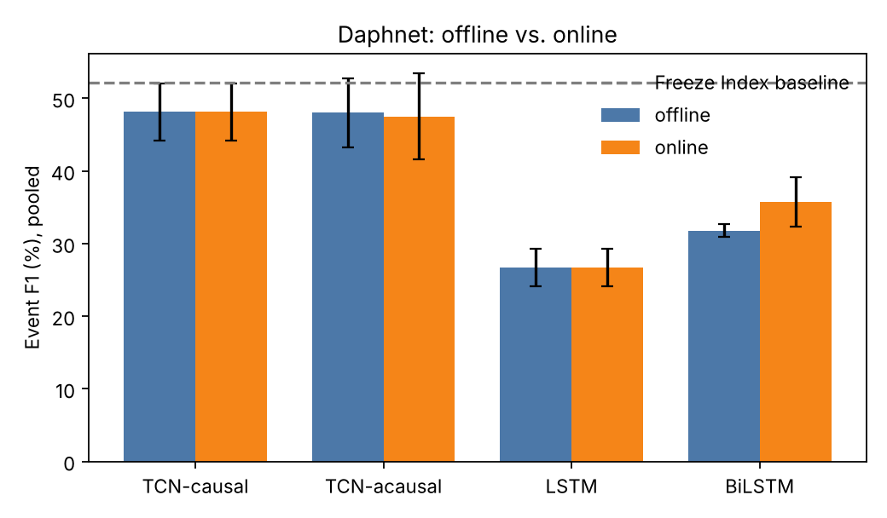
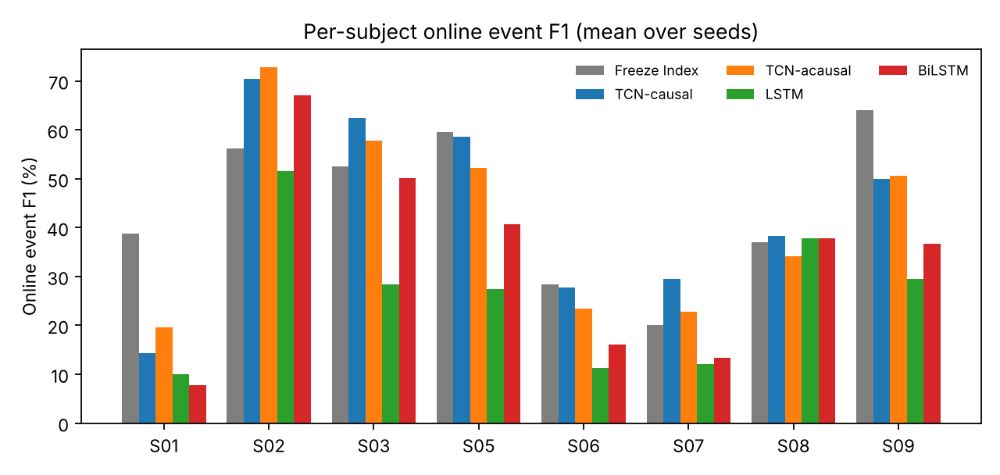
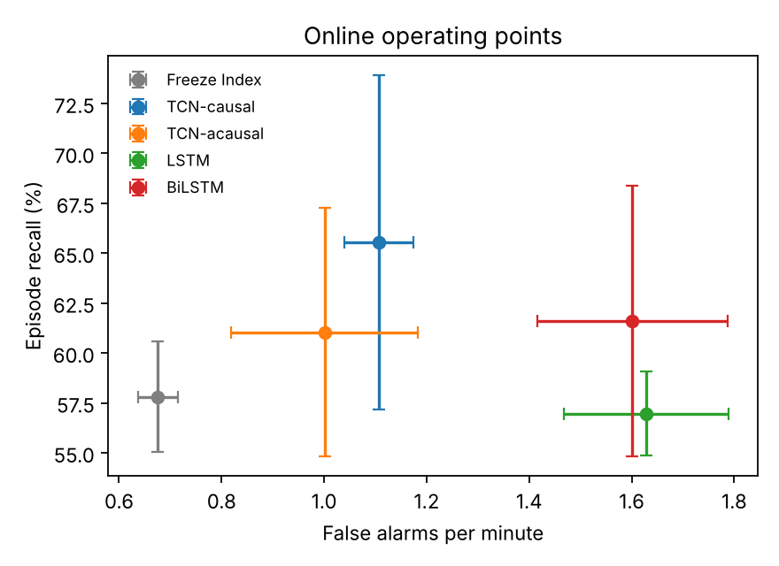
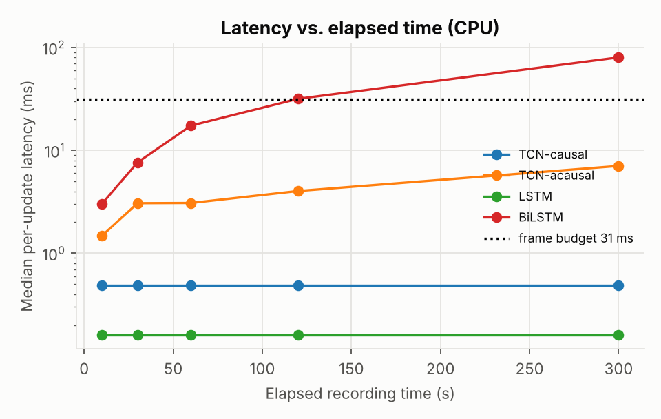
Calibration, abstention and sensor-fault robustness
Seeds [0, 1, 2] · models loaded from the main benchmark (no retraining). The temperature, the decision threshold and the abstention threshold were all chosen on the validation subjects of each fold, on clean data. Faults are applied to the raw test signals only. Event metrics are pooled over test subjects within a seed (mean ± std across seeds).
Calibration (temperature scaling fitted on validation subjects)
ECE uses 15 equal-width bins on the test subjects (mean ± std across seeds and folds). "Freeze ECE" is the calibration of p(freeze) itself.
| Model | Temperature T | ECE before | ECE after | Freeze ECE before | Freeze ECE after | NLL before | NLL after |
|---|---|---|---|---|---|---|---|
| TCN-causal | 2.63 ± 1.37 | 7.42 ± 4.62 | 8.38 ± 4.41 | 10.63 ± 5.75 | 12.23 ± 7.77 | 0.421 ± 0.240 | 0.372 ± 0.170 |
| TCN-acausal | 1.93 ± 1.24 | 6.91 ± 5.15 | 8.38 ± 5.38 | 10.79 ± 7.54 | 12.90 ± 8.60 | 0.378 ± 0.190 | 0.379 ± 0.164 |
| LSTM | 2.03 ± 0.60 | 12.88 ± 7.87 | 12.49 ± 6.21 | 16.00 ± 8.71 | 17.17 ± 8.34 | 0.526 ± 0.251 | 0.446 ± 0.135 |
| BiLSTM | 1.56 ± 0.54 | 12.95 ± 8.11 | 12.95 ± 7.63 | 15.88 ± 9.14 | 16.62 ± 9.33 | 0.455 ± 0.164 | 0.437 ± 0.131 |
(ECE in percent.)
Abstention: coverage vs. event-level performance (clean test data)
A frame is "uncertain" when max(p, 1-p) < tau after temperature scaling; uncertain frames raise no alarm. Coverage is the fraction of frames with a decision.
| Model | tau | Coverage (%) | Accuracy on covered frames (%) | Event F1 | Event recall | False alarms / min | Missed freezes | False alarms |
|---|---|---|---|---|---|---|---|---|
| TCN-causal | 0.5 | 100.0 ± 0.0 | 83.4 ± 5.5 | 48.8 ± 4.2 | 65.7 ± 9.0 | 1.14 ± 0.09 | 81 | 256 |
| TCN-causal | 0.6 | 88.5 ± 4.5 | 87.7 ± 2.5 | 44.9 ± 4.3 | 54.6 ± 9.2 | 1.02 ± 0.49 | 108 | 230 |
| TCN-causal | 0.7 | 77.9 ± 8.5 | 92.5 ± 2.2 | 44.5 ± 3.2 | 39.8 ± 0.9 | 0.49 ± 0.14 | 143 | 111 |
| TCN-causal | 0.8 | 68.0 ± 9.7 | 94.0 ± 2.0 | 33.8 ± 7.1 | 24.8 ± 7.2 | 0.22 ± 0.09 | 178 | 49 |
| TCN-causal | 0.9 | 54.7 ± 9.9 | 95.4 ± 1.6 | 18.2 ± 10.6 | 11.7 ± 7.6 | 0.11 ± 0.08 | 209 | 24 |
| TCN-acausal | 0.5 | 100.0 ± 0.0 | 81.1 ± 6.9 | 47.8 ± 6.6 | 64.1 ± 12.5 | 0.94 ± 0.22 | 85 | 212 |
| TCN-acausal | 0.6 | 87.7 ± 3.3 | 85.9 ± 4.8 | 44.0 ± 8.1 | 55.3 ± 14.7 | 1.32 ± 0.94 | 106 | 297 |
| TCN-acausal | 0.7 | 76.9 ± 6.3 | 90.8 ± 1.2 | 39.6 ± 4.4 | 38.5 ± 3.9 | 0.76 ± 0.49 | 146 | 170 |
| TCN-acausal | 0.8 | 65.6 ± 8.5 | 93.8 ± 1.4 | 31.2 ± 10.8 | 22.4 ± 8.7 | 0.24 ± 0.02 | 184 | 54 |
| TCN-acausal | 0.9 | 52.3 ± 8.4 | 95.5 ± 0.9 | 18.7 ± 12.5 | 11.7 ± 8.1 | 0.07 ± 0.04 | 209 | 16 |
| LSTM | 0.5 | 100.0 ± 0.0 | 72.2 ± 1.6 | 25.5 ± 2.6 | 58.1 ± 5.5 | 1.53 ± 0.32 | 99 | 344 |
| LSTM | 0.6 | 90.8 ± 0.6 | 76.5 ± 2.6 | 27.9 ± 3.0 | 51.1 ± 9.0 | 1.65 ± 0.85 | 116 | 372 |
| LSTM | 0.7 | 76.5 ± 0.6 | 81.3 ± 2.4 | 28.5 ± 1.4 | 41.9 ± 6.8 | 1.74 ± 0.92 | 138 | 393 |
| LSTM | 0.8 | 60.1 ± 3.4 | 88.1 ± 3.7 | 14.5 ± 12.1 | 12.2 ± 10.5 | 0.43 ± 0.34 | 208 | 97 |
| LSTM | 0.9 | 38.8 ± 1.1 | 94.1 ± 1.4 | 5.1 ± 7.2 | 2.8 ± 4.0 | 0.01 ± 0.02 | 230 | 3 |
| BiLSTM | 0.5 | 100.0 ± 0.0 | 77.5 ± 1.6 | 36.3 ± 2.5 | 60.9 ± 8.7 | 1.58 ± 0.45 | 93 | 357 |
| BiLSTM | 0.6 | 91.6 ± 2.3 | 79.4 ± 2.0 | 38.2 ± 3.2 | 58.1 ± 6.0 | 1.55 ± 0.67 | 99 | 350 |
| BiLSTM | 0.7 | 77.3 ± 5.3 | 83.6 ± 2.5 | 34.9 ± 7.2 | 41.5 ± 1.2 | 1.40 ± 0.60 | 139 | 316 |
| BiLSTM | 0.8 | 56.4 ± 4.3 | 93.2 ± 3.7 | 22.3 ± 7.7 | 15.2 ± 6.4 | 0.33 ± 0.17 | 201 | 74 |
| BiLSTM | 0.9 | 32.8 ± 10.9 | 97.1 ± 3.1 | 2.2 ± 1.0 | 1.1 ± 0.5 | 0.00 ± 0.00 | 234 | 1 |
Operating abstention threshold (best validation event F1 with coverage >= 80%; the most frequent choice over folds and seeds is shown, each fold uses its own): TCN-causal 0.5, TCN-acausal 0.5, LSTM 0.5, BiLSTM 0.5.
Sensor-fault robustness (online recognition, fixed thresholds from clean validation data)
Dropped frames hold the last received frame. Noise is Gaussian with std = factor x each feature's training-set std. A stuck sensor repeats its value for the given number of seconds (one event per 30 s of recording at random times). "Missed" = freeze episodes never detected; "FA" = false alarms (counts summed over the 8 test subjects, mean over seeds; the clean test set has 237 episodes).
Event F1
| Condition | Freeze Index | TCN-causal | TCN-acausal | LSTM | BiLSTM |
|---|---|---|---|---|---|
| clean | 52.1 ± 2.6 | 48.8 ± 4.2 | 47.8 ± 6.6 | 25.5 ± 2.6 | 36.3 ± 2.5 |
| drop 5% | 51.5 ± 2.4 | 49.1 ± 3.8 | 46.8 ± 6.8 | 24.9 ± 1.5 | 36.2 ± 1.1 |
| drop 10% | 51.4 ± 4.1 | 49.2 ± 3.7 | 45.3 ± 5.3 | 25.3 ± 2.7 | 35.8 ± 3.0 |
| drop 20% | 49.9 ± 2.5 | 48.7 ± 2.9 | 45.0 ± 5.4 | 27.5 ± 2.1 | 36.7 ± 0.8 |
| noise 0.25x std | 50.8 ± 2.1 | 46.3 ± 2.7 | 45.3 ± 4.4 | 25.8 ± 2.7 | 34.3 ± 1.4 |
| noise 0.5x std | 36.2 ± 2.9 | 42.2 ± 1.9 | 40.5 ± 3.7 | 26.2 ± 1.2 | 32.5 ± 1.7 |
| noise 1.0x std | 30.0 ± 1.8 | 35.5 ± 3.3 | 34.9 ± 0.6 | 27.0 ± 1.6 | 31.1 ± 3.7 |
| stuck 1 s | 51.8 ± 1.7 | 48.4 ± 3.9 | 46.7 ± 6.6 | 25.9 ± 3.7 | 35.6 ± 2.1 |
| stuck 2 s | 51.6 ± 3.5 | 47.7 ± 3.7 | 45.6 ± 7.3 | 25.0 ± 1.6 | 35.0 ± 2.5 |
| stuck 3 s | 51.0 ± 2.2 | 47.0 ± 3.8 | 46.2 ± 7.3 | 25.1 ± 2.6 | 35.9 ± 2.4 |
Event recall (%)
| Condition | Freeze Index | TCN-causal | TCN-acausal | LSTM | BiLSTM |
|---|---|---|---|---|---|
| clean | 57.8 ± 2.8 | 65.7 ± 9.0 | 64.1 ± 12.5 | 58.1 ± 5.5 | 60.9 ± 8.7 |
| drop 5% | 57.2 ± 3.5 | 66.8 ± 8.5 | 63.4 ± 12.8 | 59.4 ± 6.7 | 61.0 ± 8.0 |
| drop 10% | 56.4 ± 4.8 | 66.0 ± 8.8 | 61.0 ± 13.5 | 58.6 ± 5.9 | 60.6 ± 8.1 |
| drop 20% | 51.3 ± 2.1 | 63.6 ± 8.4 | 59.9 ± 14.2 | 61.7 ± 5.9 | 62.3 ± 9.1 |
| noise 0.25x std | 59.1 ± 3.3 | 72.9 ± 7.4 | 68.9 ± 11.4 | 60.2 ± 6.2 | 63.0 ± 10.7 |
| noise 0.5x std | 66.9 ± 1.0 | 81.7 ± 5.0 | 76.1 ± 6.8 | 62.4 ± 7.4 | 67.7 ± 14.1 |
| noise 1.0x std | 72.3 ± 4.5 | 91.8 ± 3.1 | 81.0 ± 6.3 | 72.7 ± 16.4 | 78.5 ± 10.0 |
| stuck 1 s | 57.1 ± 2.6 | 65.0 ± 8.5 | 63.9 ± 13.0 | 59.6 ± 6.2 | 60.8 ± 8.0 |
| stuck 2 s | 56.8 ± 3.3 | 64.3 ± 8.9 | 63.3 ± 12.1 | 58.1 ± 5.2 | 61.3 ± 7.8 |
| stuck 3 s | 56.1 ± 2.1 | 63.0 ± 8.9 | 62.9 ± 12.5 | 59.1 ± 5.5 | 61.9 ± 7.8 |
False alarms per minute
| Condition | Freeze Index | TCN-causal | TCN-acausal | LSTM | BiLSTM |
|---|---|---|---|---|---|
| clean | 0.68 ± 0.04 | 1.14 ± 0.09 | 0.94 ± 0.22 | 1.53 ± 0.32 | 1.58 ± 0.45 |
| drop 5% | 0.67 ± 0.04 | 1.16 ± 0.07 | 0.96 ± 0.24 | 1.58 ± 0.31 | 1.61 ± 0.47 |
| drop 10% | 0.67 ± 0.04 | 1.12 ± 0.11 | 0.99 ± 0.21 | 1.69 ± 0.38 | 1.63 ± 0.48 |
| drop 20% | 0.62 ± 0.03 | 1.09 ± 0.11 | 1.02 ± 0.22 | 1.75 ± 0.36 | 1.68 ± 0.47 |
| noise 0.25x std | 0.80 ± 0.10 | 1.50 ± 0.16 | 1.28 ± 0.13 | 1.81 ± 0.41 | 2.02 ± 0.63 |
| noise 0.5x std | 2.38 ± 0.35 | 2.18 ± 0.24 | 2.01 ± 0.13 | 2.46 ± 0.68 | 2.60 ± 0.82 |
| noise 1.0x std | 3.47 ± 0.20 | 3.36 ± 0.41 | 3.14 ± 0.28 | 3.11 ± 0.77 | 3.19 ± 1.09 |
| stuck 1 s | 0.68 ± 0.05 | 1.15 ± 0.07 | 1.01 ± 0.22 | 1.61 ± 0.35 | 1.68 ± 0.48 |
| stuck 2 s | 0.66 ± 0.03 | 1.16 ± 0.09 | 1.04 ± 0.27 | 1.62 ± 0.30 | 1.68 ± 0.44 |
| stuck 3 s | 0.69 ± 0.02 | 1.14 ± 0.08 | 1.01 ± 0.28 | 1.57 ± 0.31 | 1.63 ± 0.44 |
Frame accuracy (%)
| Condition | Freeze Index | TCN-causal | TCN-acausal | LSTM | BiLSTM |
|---|---|---|---|---|---|
| clean | 88.3 ± 0.3 | 83.4 ± 5.5 | 81.1 ± 6.9 | 72.2 ± 1.6 | 77.5 ± 1.6 |
| drop 5% | 88.3 ± 0.3 | 83.4 ± 5.5 | 81.1 ± 6.9 | 72.2 ± 1.6 | 77.5 ± 1.5 |
| drop 10% | 88.2 ± 0.3 | 83.4 ± 5.5 | 81.1 ± 6.9 | 72.2 ± 1.7 | 77.4 ± 1.6 |
| drop 20% | 87.9 ± 0.3 | 83.2 ± 5.6 | 81.2 ± 6.9 | 72.2 ± 1.9 | 77.3 ± 1.5 |
| noise 0.25x std | 88.2 ± 0.2 | 82.3 ± 6.0 | 79.7 ± 8.0 | 73.7 ± 2.2 | 77.3 ± 1.7 |
| noise 0.5x std | 83.6 ± 1.4 | 79.7 ± 6.7 | 76.7 ± 8.3 | 75.6 ± 3.4 | 76.9 ± 2.3 |
| noise 1.0x std | 69.0 ± 1.9 | 76.6 ± 6.7 | 73.5 ± 7.9 | 74.9 ± 4.0 | 73.0 ± 3.5 |
| stuck 1 s | 88.2 ± 0.3 | 83.3 ± 5.5 | 81.0 ± 7.0 | 72.0 ± 1.7 | 77.3 ± 1.5 |
| stuck 2 s | 88.3 ± 0.2 | 83.3 ± 5.3 | 80.9 ± 6.8 | 71.8 ± 1.7 | 77.0 ± 1.6 |
| stuck 3 s | 88.3 ± 0.3 | 83.4 ± 5.3 | 81.0 ± 6.8 | 71.1 ± 1.9 | 76.9 ± 1.5 |
Missed freezes vs. false alarms (counts; plain decision / with abstention)
| Condition | Freeze Index | TCN-causal | TCN-acausal | LSTM | BiLSTM |
|---|---|---|---|---|---|
| clean | 100 / 152 | 81 / 256 ; 81 / 256 | 85 / 212 ; 85 / 212 | 99 / 344 ; 104 / 391 | 93 / 357 ; 94 / 407 |
| drop 5% | 101 / 151 | 79 / 261 ; 79 / 261 | 87 / 217 ; 87 / 217 | 96 / 355 ; 101 / 404 | 92 / 364 ; 94 / 412 |
| drop 10% | 103 / 150 | 81 / 253 ; 81 / 253 | 92 / 224 ; 92 / 224 | 98 / 381 ; 101 / 430 | 93 / 368 ; 94 / 413 |
| drop 20% | 115 / 139 | 86 / 245 ; 86 / 245 | 95 / 230 ; 95 / 230 | 91 / 395 ; 94 / 445 | 89 / 379 ; 91 / 422 |
| noise 0.25x std | 97 / 181 | 64 / 338 ; 64 / 338 | 74 / 288 ; 74 / 290 | 94 / 408 ; 97 / 452 | 88 / 456 ; 89 / 504 |
| noise 0.5x std | 78 / 536 | 43 / 491 ; 43 / 491 | 57 / 453 ; 57 / 467 | 89 / 554 ; 90 / 587 | 77 / 585 ; 78 / 640 |
| noise 1.0x std | 66 / 783 | 19 / 758 ; 19 / 758 | 45 / 708 ; 46 / 722 | 65 / 701 ; 65 / 729 | 51 / 720 ; 52 / 776 |
| stuck 1 s | 102 / 152 | 83 / 258 ; 83 / 258 | 86 / 229 ; 86 / 229 | 96 / 364 ; 101 / 414 | 93 / 378 ; 95 / 426 |
| stuck 2 s | 102 / 149 | 85 / 262 ; 85 / 262 | 87 / 234 ; 87 / 235 | 99 / 365 ; 104 / 416 | 92 / 378 ; 93 / 426 |
| stuck 3 s | 104 / 156 | 88 / 256 ; 88 / 256 | 88 / 227 ; 88 / 228 | 97 / 355 ; 102 / 405 | 90 / 368 ; 92 / 414 |
Each cell: missed / false alarms.
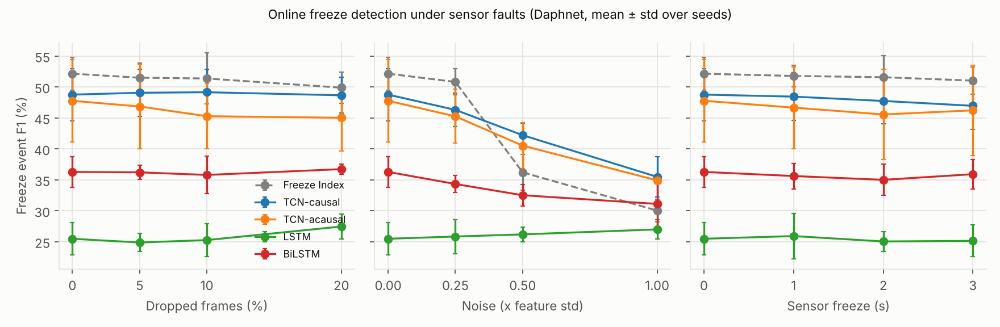
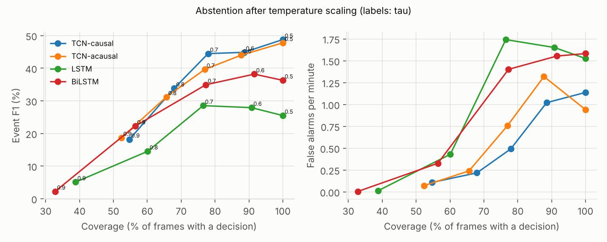
Deployment (design proposal)
CPU, 1 thread, batch size 1, one streaming step per frame; frame budget 31.2 ms (32 Hz). Exported graph = one step (new frame + model state in, freeze logits + new state out). Outputs of the exported fp32 models match the offline PyTorch pass (max abs difference below). Accuracy change is measured on all 8 Daphnet test subjects (seed 0) with the decision threshold chosen on validation subjects using the fp32 ONNX model and then applied unchanged to int8.
TCN-causal (26,501 parameters)
| Format | Median ms | p95 ms | Size (MB) | Max abs diff vs offline | Event F1 | Event recall | PR-AUC |
|---|---|---|---|---|---|---|---|
| PyTorch (eager) | 0.412 | 0.575 | 0.118 | 1.9e-06 | n/a | n/a | n/a |
| TorchScript | 0.096 | 0.144 | 0.119 | 1.4e-06 | n/a | n/a | n/a |
| ONNX Runtime fp32 | 0.042 | 0.069 | 0.115 | 1.9e-06 | 52.6 | 67.5 | 0.517 |
| ONNX Runtime int8 (dynamic) | 0.084 | 0.152 | 0.064 | 5.7e-02 | 52.4 | 67.5 | 0.517 |
Event F1 change after int8 quantisation: -0.2 points.
LSTM (11,045 parameters)
| Format | Median ms | p95 ms | Size (MB) | Max abs diff vs offline | Event F1 | Event recall | PR-AUC |
|---|---|---|---|---|---|---|---|
| PyTorch (eager) | 0.158 | 0.253 | 0.050 | 1.4e-06 | n/a | n/a | n/a |
| TorchScript | 0.104 | 0.169 | 0.051 | 1.4e-06 | n/a | n/a | n/a |
| ONNX Runtime fp32 | 0.016 | 0.027 | 0.041 | 9.5e-07 | 29.0 | 55.7 | 0.360 |
| ONNX Runtime int8 (dynamic) | 0.023 | 0.041 | 0.016 | 1.5e-02 | 29.2 | 55.3 | 0.357 |
Event F1 change after int8 quantisation: +0.2 points.
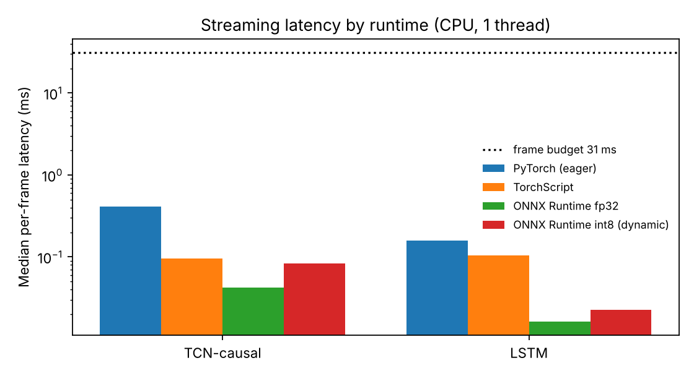
JIGSAWS surgical gesture and skill recognition
Suturing
Awaiting dataset access. No results are shown for this task.
Knot Tying
Awaiting dataset access. No results are shown for this task.
Needle Passing
Awaiting dataset access. No results are shown for this task.
Reproduce
Every setting lives in configs/*.yaml; ./run_all.sh runs all configs and rebuilds this page. See the README.